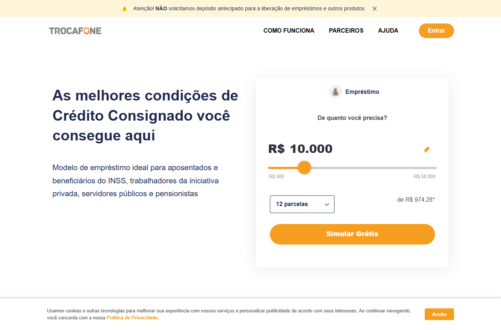
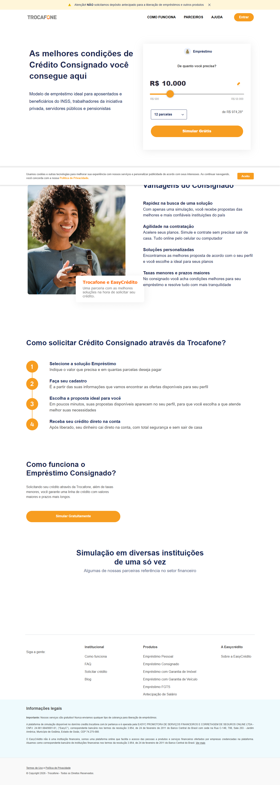

Sistema de Investigação de Marca e Identidade Online
https://credito.trocafone.com.br/emprestimo-consignado
Prioridade: MEDIUM · Cenário: B_AMBIGUOUS_COMMUNICATION · Revisão humana: PENDING
Trata-se de página de simulação de empréstimo consignado da Trocafone operada pela plataforma multibancos EasyCrédito (CNPJ 24.081.684/0001-61). A página utiliza identidade visual própria, não exibe logotipo nem faz uso proeminente da marca Banco BV (constando apenas em atributo 'alt' de imagem de carrossel de parceiros não renderizada) e declara expressamente sua razão social, CNPJ e condição de correspondente bancário no rodapé. Portanto, configura menção comercial legítima sem indícios de uso indevido da marca. [Revisor: CONFIRM] A página pertence a uma promotora de crédito/correspondente bancário (EASYC PROMOTORA DE SERVIÇOS FINANCEIROS E CORRETAGEM DE SEGUROS ONLINE LTDA - CNPJ 24.081.684/0001-61, operando whitelabel para Trocafone) que oferece simulador próprio de empréstimo consignado e referencia o Banco BV como instituição parceira (E-IMG-2, E-DISC-001). Embora identifique sua razão social, CNPJ e condição de correspondente bancário no rodapé (E-FTR), há pendências de adequação à Resolução CMN nº 4.935/2021 (citação à norma revogada nº 3.954/2011, ausência de ouvidoria e omissão da lista explícita de instituições contratantes antes do clique em 'Ver mais'). Confirma-se a classificação REVIEW_REQUIRED com prioridade MEDIUM.


| Ref | Tipo | Local | Conteúdo |
|---|---|---|---|
| E-URL | domain | url | URL final: https://credito.trocafone.com.br/emprestimo-consignado (domínio: credito.trocafone.com.br) |
| E-DISC-001 | text | search_index | Índice de busca (grounding): trocafone.com.br — **Estabelecimento / Perfil:** Crédito Trocafone / EasyC Promotora | **URL:** `https://credito.trocafone.com.br/` | **Uso da Marca e Produtos:** Plataforma *whitelabel* de simulação de crédito que destaca o logotipo e o nome do **Banco BV** no carrossel de bancos parceiros | Oferece simulador próprio para empréstimo com garantia de veículo (carros e motos), refinanciamento, empréstimo com garantia de imóvel e crédito consignado (INSS, público e privado) | Declara no rodapé que o subdomínio é operado pela `EASYC PROMOTORA DE SERVIÇOS FINANCEIROS E CORRETAGEM DE SEGUROS ONLINE LTDA` (CNPJ `24.081.684/0001-61`), atuando como correspondente bancário, mas também cita a antiga Resolução BCB nº 3.954/2011 em vez da CMN nº 4.935/2021 |
| E-SHOT-VIEWPORT | screenshot | viewport | evidence\C149e60ddd2\attempt-1\viewport.png (sha256 a0b3ba419fb6be7f…) |
| E-SHOT-FULL | screenshot | page | evidence\C149e60ddd2\attempt-1\fullpage.png (sha256 82b5070e774d111f…) |
| E-TITLE | title | head | Encontre o empréstimo perfeito para você! | Trocafone |
| E-META-1 | meta | head | description: Faça a simulação online e encontre o empréstimo perfeito para você, seja ele empréstimo pessoal, consignado ou empréstimo com garantia, sem burocracia! |
| E-META-2 | meta | head | og:title: Encontre o empréstimo perfeito para você! | Trocafone |
| E-META-3 | meta | head | og:description: Faça a simulação online e encontre o empréstimo perfeito para você, seja ele empréstimo pessoal, consignado ou empréstimo com garantia, sem burocracia! |
| E-CANONICAL | meta | head | https://credito.trocafone.com.br/emprestimo-consignado |
| E-HEAD-1 | heading | page | As melhores condições de Crédito Consignado você consegue aqui |
| E-HEAD-2 | heading | page | Modelo de empréstimo ideal para aposentados e beneficiários do INSS, trabalhadores da iniciativa privada, servidores públicos e pensionistas |
| E-HEAD-3 | heading | page | Vantagens do Consignado |
| E-HEAD-4 | heading | page | Como solicitar Crédito Consignado através da Trocafone? |
| E-HEAD-5 | heading | page | Como funciona o Empréstimo Consignado? |
| E-HEAD-6 | heading | page | Simulação em diversas instituições de uma só vez |
| E-HEAD-7 | heading | page | Informações legais |
| E-FOLD | text | viewport (acima da dobra) | Atenção! NÃO solicitamos depósito antecipado para a liberação de empréstimos e outros produtos COMO FUNCIONA PARCEIROS AJUDA Entrar As melhores condições de Crédito Consignado você consegue aqui Modelo de empréstimo ideal para aposentados e beneficiários do INSS, trabalhadores da iniciativa privada, servidores públicos e pensionistas Empréstimo De quanto você precisa? R$ R$ 500 R$ 50.000 de R$ 974,28 * Vantagens do Consignado Usamos cookies e outras tecnologias para melhorar sua experiência com nossos serviços e personalizar publicidade de acordo com seus interesses. Ao continuar navegando, você concorda com a nossa Política de Privacidade. Aceito |
| E-FTR | text | footer | Informações legais Importante: Nossos serviços são gratuitos! Nunca enviamos qualquer tipo de cobrança para liberação de empréstimos. A plataforma de simulação disponível no domínio credito.trocafone.com.br pertence e é operada pela EASYC PROMOTORA DE SERVIÇOS FINANCEIROS E CORRETAGEM DE SEGUROS ONLINE LTDA - CNPJ: 24.081.684/0001-61, ("EasyC"), correspondente bancário nos termos da resolução 3.954, de 24 de fevereiro de 2011 do Banco Central do Brasil com sede na Rua C-149, 708, Sala 203 - Jardim América, Município de Goiânia, Estado de Goiás, CEP 74.275-080. O EasyCrédito não é uma instituição financeira, somos uma plataforma online que facilita o acesso das pessoas a produtos e serviços financeiros ofertados por empresas credenciadas na plataforma. Atuamos como correspondente bancário de instituições financeiras nos termos da resolução 3.954, de 24 de fevereiro de 2011 do Banco Central do Brasil. Ver mais | Termos de Uso e Política de Privacidade © Copyright 2026 - Trocafone - Todos os Direitos Reservados. |
| E-NAV | nav | header | <https://credito.trocafone.com.br/> | COMO FUNCIONA <https://credito.trocafone.com.br/emprestimo-consignado#how-it-works> | PARCEIROS <https://credito.trocafone.com.br/emprestimo-consignado#parceiros> | AJUDA <https://easyc.zendesk.com/> | Entrar <https://credito.trocafone.com.br/entrar> |
| E-CTA-1 | cta | page | Fechar alerta |
| E-CTA-2 | cta | nav | Entrar <https://credito.trocafone.com.br/entrar> |
| E-CTA-3 | cta | page | Simular Grátis |
| E-CTA-4 | cta | page | Simular Gratuitamente <https://credito.trocafone.com.br/emprestimo-consignado#home> |
| E-CTA-5 | cta | page | Aceito |
| E-CONTACT-1 | contact | page | <https://www.facebook.com/people/Trocafone/100085941996994/> |
| E-CONTACT-2 | contact | page | <https://www.instagram.com/trocafone/> |
| E-IMG-1 | image | nav (acima da dobra) | imagem alt='Logo' src=https://cdn2.easycredito.com.br/assets/whitelabels/trocafone/logo-9e9a7412d16676648ffc96428692cbf5b8a2d9063e96314d291ee90d6d341639.png (154x48, acima da dobra) |
| E-IMG-2 | image | page | imagem alt='Banco BV' src=https://cdn2.easycredito.com.br/assets/main/blank-ef1955ae757c8b966c83248350331bd3a30f658ced11f387f8ebf05ab3368629.gif (1x1, abaixo da dobra) |
| E-IMG-3 | image | page | imagem alt='Logo Trocafone' src=https://cdn2.easycredito.com.br/assets/main/blank-ef1955ae757c8b966c83248350331bd3a30f658ced11f387f8ebf05ab3368629.gif (1x1, abaixo da dobra) |
| E-TXT-001 | text | page | PARCEIROS |
| E-TXT-002 | text | page | Algumas de nossas parceiras referência no setor financeiro |
| E-TXT-003 | text | page | A plataforma de simulação disponível no domínio credito.trocafone.com.br pertence e é operada pela EASYC PROMOTORA DE SERVIÇOS FINANCEIROS E CORRETAGEM DE SEGUROS ONLINE LTDA - CNPJ: 24.081.684/0001-61, ("EasyC"), correspondente bancário nos termos da resolução 3.954, de 24 de fevereiro de 2011 do Banco Central do Brasil com sede na Rua C-149, 708, Sala 203 - Jardim América, Município de Goiânia, |
| E-TXT-004 | text | page | Estado de Goiás, CEP 74.275-080. |
| E-TXT-005 | text | page | O EasyCrédito não é uma instituição financeira, somos uma plataforma online que facilita o acesso das pessoas a produtos e serviços financeiros ofertados por empresas credenciadas na plataforma. Atuamos como correspondente bancário de instituições financeiras nos termos da resolução 3.954, de 24 de fevereiro de 2011 do Banco Central do Brasil. Ver mais |
| Dimensão | Sinal | Achado | Refs |
|---|---|---|---|
| VISUAL_IDENTITY | LEGITIMATE | A página utiliza identidade visual própria da parceria entre Trocafone e EasyCrédito, em tons de laranja e azul escuro, sem uso de elementos visuais ou cores institucionais do Banco BV. | E-SHOT-VIEWPORT E-SHOT-FULL E-IMG-1 |
| DECLARED_COMMERCIAL_IDENTITY | LEGITIMATE | O estabelecimento identifica claramente sua operação no cabeçalho (Trocafone) e no rodapé como plataforma operada pela EASYC PROMOTORA DE SERVIÇOS FINANCEIROS E CORRETAGEM DE SEGUROS ONLINE LTDA (CNPJ 24.081.684/0001-61). | E-FTR E-TXT-003 E-SHOT-FULL |
| CORRESPONDENT_TRANSPARENCY | LEGITIMATE | Declara expressamente no rodapé que não é uma instituição financeira e que atua como correspondente bancário, informando razão social, CNPJ e endereço completo (embora faça referência à antiga Resolução BCB nº 3.954/2011). | E-FTR E-TXT-003 E-TXT-005 |
| INSTITUTIONAL_LANGUAGE | LEGITIMATE | A comunicação apresenta a plataforma como um simulador multibancos ('Simulação em diversas instituições de uma só vez') da parceria Trocafone e EasyCrédito, sem se passar pelo Banco BV. | E-HEAD-4 E-HEAD-6 E-SHOT-FULL |
| LOGO_USAGE | LEGITIMATE | Não há destaque indevido ao logotipo do Banco BV na página; consta apenas uma tag de imagem oculta/placeholder (1x1 gif) com atributo alt='Banco BV' na seção de instituições parceiras. | E-IMG-2 E-TXT-002 E-SHOT-FULL |
| SERVICE_JOURNEY | LEGITIMATE | A jornada de simulação de crédito consignado é apresentada como serviço próprio da plataforma multibancos Trocafone / EasyCrédito. | E-FOLD E-SHOT-VIEWPORT |
| CONTACT_CHANNELS | LEGITIMATE | Os canais de contato e ajuda apontam para a própria Trocafone e central Zendesk da EasyC. | E-NAV E-CONTACT-1 E-CONTACT-2 |
| CONSUMER_CONFUSION | LEGITIMATE | Não há risco de confusão para o consumidor quanto à titularidade da página, que se identifica claramente como plataforma da Trocafone em parceria com a EasyCrédito. | E-TITLE E-SHOT-VIEWPORT E-FTR |
Trata-se de página de simulação de empréstimo consignado da Trocafone operada pela plataforma multibancos EasyCrédito (CNPJ 24.081.684/0001-61). A página utiliza identidade visual própria, não exibe logotipo nem faz uso proeminente da marca Banco BV (constando apenas em atributo 'alt' de imagem de carrossel de parceiros não renderizada) e declara expressamente sua razão social, CNPJ e condição de correspondente bancário no rodapé. Portanto, configura menção comercial legítima sem indícios de uso indevido da marca.
A página declara atuação como correspondente/prestador e identifica a empresa, mas não houve confirmação em cadastro autorizado.
| Tipo | Valor | Ref | Contexto |
|---|---|---|---|
| domain | trocafone.com.br | E-URL | |
| cnpj | 24.081.684/0001-61 | E-DISC-001 | pé que o subdomínio é operado pela `EASYC PROMOTORA DE SERVIÇOS FINANCEIROS E CORRETAGEM DE SEGUROS ONLINE LTDA` (CNPJ `24.081.684/0001-61 |
| legal_name | DE SERVIÇOS FINANCEIROS E CORRETAGEM DE SEGUROS ONLINE LTDA | E-DISC-001 | |
| social_profile | https://www.facebook.com/people/Trocafone/100085941996994/ | E-CONTACT-1 | |
| social_profile | https://www.instagram.com/trocafone/ | E-CONTACT-2 | |
| correspondent_declaration | correspondente bancário | E-FTR | Informações legais Importante: Nossos serviços são gratuitos! Nunca enviamos qualquer tipo de cobrança para liberação de empréstimos. A plataforma de simulação disponível no domínio credito.trocafone. |
| correspondent_declaration | não é uma instituição financeira | E-FTR | Informações legais Importante: Nossos serviços são gratuitos! Nunca enviamos qualquer tipo de cobrança para liberação de empréstimos. A plataforma de simulação disponível no domínio credito.trocafone. |
| correspondent_declaration | Atuamos como correspondente | E-FTR | Informações legais Importante: Nossos serviços são gratuitos! Nunca enviamos qualquer tipo de cobrança para liberação de empréstimos. A plataforma de simulação disponível no domínio credito.trocafone. |
| partnership_declaration | bancos parceiros | E-DISC-001 | **Uso da Marca e Produtos:** Plataforma *whitelabel* de simulação de crédito que destaca o logotipo e o nome do **Banco BV** no carrossel de bancos parceiros |
Mapeamento indicativo para apoio à auditoria. Não constitui conclusão regulatória; a decisão definitiva pertence à auditoria.
Fonte: NORMATIVE
Art. 14. O contrato de correspondente deve estabelecer: [...] II - vedação à utilização, pelo contratado, de logomarca ou de outros atributos que sejam similares aos adotados pela instituição contratante em suas agências, postos de atendimento, sítio eletrônico na internet, aplicativo ou outras plataformas de comunicação em rede;
Hipótese: Uso de logomarca ou de atributos similares aos adotados pela contratante em seus canais. Aplicável somente se confirmado o vínculo de correspondente.
Evidência observada: E-IMG-1 E-IMG-2 E-IMG-3
Informação faltante:
Fonte: NORMATIVE
Art. 14. O contrato de correspondente deve estabelecer: [...] III - divulgação ao público, pelo contratado, de sua condição de prestador de serviços à instituição contratante, identificada pelo nome com que é conhecida no mercado, com descrição dos produtos e serviços oferecidos e canais de contato da instituição contratante, inclusive de sua ouvidoria, em local visível, em destaque e em formato legível, por meio de: a) sítio eletrônico do correspondente na internet, acessível na página inicial; b) aplicativo e outras plataformas de comunicação em rede do correspondente; [...]
Evidência observada: E-CONTACT-1 E-CONTACT-2 E-FTR E-HEAD-4 E-HEAD-6 E-NAV E-SHOT-FULL E-SHOT-VIEWPORT E-TITLE E-TXT-003 E-TXT-005
Fonte: NORMATIVE
Art. 3º O correspondente atua por conta e sob as diretrizes da instituição contratante, que assume inteira responsabilidade pelo atendimento prestado aos clientes e usuários por meio do contratado.
Evidência observada: E-CONTACT-1 E-CONTACT-2 E-FOLD E-NAV E-SHOT-VIEWPORT
Limitações: requisitos contratuais/internos não fornecidos: mapeamento limitado ao texto normativo
Decisão: CONFIRM → REVIEW_REQUIRED / MEDIUM
A página pertence a uma promotora de crédito/correspondente bancário (EASYC PROMOTORA DE SERVIÇOS FINANCEIROS E CORRETAGEM DE SEGUROS ONLINE LTDA - CNPJ 24.081.684/0001-61, operando whitelabel para Trocafone) que oferece simulador próprio de empréstimo consignado e referencia o Banco BV como instituição parceira (E-IMG-2, E-DISC-001). Embora identifique sua razão social, CNPJ e condição de correspondente bancário no rodapé (E-FTR), há pendências de adequação à Resolução CMN nº 4.935/2021 (citação à norma revogada nº 3.954/2011, ausência de ouvidoria e omissão da lista explícita de instituições contratantes antes do clique em 'Ver mais'). Confirma-se a classificação REVIEW_REQUIRED com prioridade MEDIUM.
| Tema | Severidade | Questionamento | Refs |
|---|---|---|---|
| Conformidade regulatória da divulgação de correspondente bancário (Res. CMN 4.935/2021) | MEDIUM | Trata-se de plataforma comercial de simulação de crédito/correspondente bancário (EasyC Promotora / Trocafone) que associa a marca 'Banco BV' na seção de parceiros (E-IMG-2, E-DISC-001). Apesar de informar razão social e CNPJ no rodapé (E-FTR), o texto legal cita a revogada Resolução BCB nº 3.954/2011 em vez da Resolução CMN nº 4.935/2021 e não apresenta telefone de ouvidoria nem lista visivelmente na página principal as instituições contratantes (ocultas sob 'Ver mais'), justificando a manutenção de REVIEW_REQUIRED. | E-DISC-001 E-IMG-2 E-FTR E-TXT-003 E-TXT-005 E-SHOT-FULL |
| contradictory_evidence | LOW | Coexistem declaração de correspondente e indícios de confusão. | E-FTR E-TXT-003 E-TXT-005 |
| Fonte | Consulta / hipótese | URL original | Título / trecho |
|---|---|---|---|
| grounding | Objetivo: Promotoras e correspondentes oferecendo refinanciamento, crédito com garantia, consignado e home equity.
Execute no Google Search as seguintes consultas (dorks):
- "Banco BV" ("crédito com garantia" OR "home equity" OR refinanciamento) (correspondente OR promotora) -site:bv.com.br -site:bancobv.com.br -site:bvfinanceira.com.br -site:bvinvestimentos.com.br -site:napista.com.br -site:bvopen.com.br -site:meufinanciamentosolar.com.br -site:votorantim.com.br -site:vam.com.br -site:reclameaqui.com.br -site:jusbrasil.com.br -site:jus.br -site:weebly.com -site:site123.me
- "Banco BV" (consignado OR "empréstimo") promotora ("correspondente bancário" OR correspondente) -site:bv.com.br -site:bancobv.com.br -site:bvfinanceira.com.br -site:bvinvestimentos.com.br -site:napista.com.br -site:bvopen.com.br -site:meufinanciamentosolar.com.br -site:votorantim.com.br -site:vam.com.br -site:reclameaqui.com.br -site:jusbrasil.com.br -site:jus.br -site:weebly.com -site:site123.me
Liste de forma abrangente as páginas públicas encontradas (até 12 resultados distintos), informando para cada uma o nome do estabelecimento/perfil, a URL e como a marca é utilizada (destaque visual, título, feirão, simulador, redes sociais e se há ou não identificação clara de CNPJ e condição de correspondente bancário). H2-product:refinanciamento e crédito com garantia | https://credito.trocafone.com.br/emprestimo-consignado | trocafone.com.br **Estabelecimento / Perfil:** Crédito Trocafone / EasyC Promotora | **URL:** `https://credito.trocafone.com.br/` | **Uso da Marca e Produtos:** Plataforma *whitelabel* de simulação de crédito que destaca o logotipo e o nome do **Banco BV** no carrossel de bancos parceiros | Oferece simulador próprio para empréstimo com garantia de veículo (carros e motos), refinanciamento, empréstimo com garantia de imóvel e crédito consignado (INSS, público e privado) | Declara no rodapé que o subdomínio é operado pela `EASYC PROMOTORA DE SERVIÇOS FINANCEIROS E CORRETAGEM DE SEGUROS ONLINE LTDA` (CNPJ `24.081.684/0001-61`), atuando como correspondente bancário, mas também cita a antiga Resolução BCB nº 3.954/2011 em vez da CMN nº 4.935/2021 |
Original: https://credito.trocafone.com.br/emprestimo-consignado
Final: https://credito.trocafone.com.br/emprestimo-consignado
| Artefato | Caminho | SHA-256 | Bytes |
|---|---|---|---|
| screenshot_viewport | evidence\C149e60ddd2\attempt-1\viewport.png | a0b3ba419fb6be7f8d9a428e7860c0e1b7ad6b93a529e759528787a67a5a3014 | 85568 |
| screenshot_full | evidence\C149e60ddd2\attempt-1\fullpage.png | 82b5070e774d111f745aa85495bb03e5f1bdd23179a0b37b230bd1ea1d22832c | 766523 |
| html | evidence\C149e60ddd2\attempt-1\page.html.txt | 6f172d8061c07e6ff67b07d93e4bc37bd58fb6c292989a72211d9d68a0129e91 | 59630 |
| text | evidence\C149e60ddd2\attempt-1\text.txt | 7db2cf5ddd14a4782389061f0c81d2b77e656f409d754b8bb1b2130e1dc1b826 | 3585 |
| page_data | evidence\C149e60ddd2\attempt-1\page.json | bd846081333a124f4b38bfb929d84ba98312a75eea905bcc9d79b3e973edb5c8 | 21476 |
| Quando | De | Para | Nota |
|---|---|---|---|
| 2026-11-23T14:17:58+00:00 | DISCOVERED | QUEUED | prioritised (score 1.0) |
| 2026-11-23T14:42:31+00:00 | QUEUED | COLLECTING | |
| 2026-11-23T14:42:42+00:00 | COLLECTING | COLLECTED | |
| 2026-11-23T14:42:42+00:00 | COLLECTED | ANALYZING | |
| 2026-11-23T14:43:10+00:00 | ANALYZING | REVIEWING | |
| 2026-11-23T14:43:23+00:00 | REVIEWING | COMPLETED |